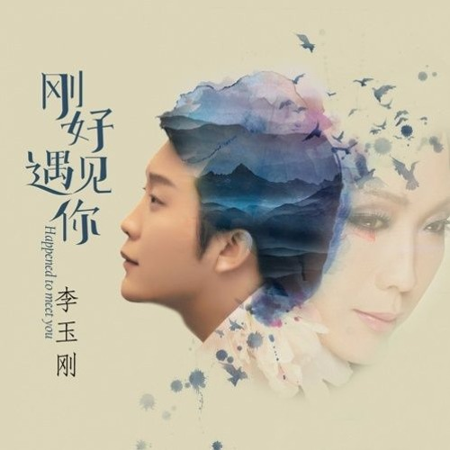

學貓叫
學貓叫 (Xue Mao Jiao) is a Chinese song created by the artist, Xiaofengfen. In English translation, it's called "Learn to Meow". It's a wholesome song where a singer wants to be with that special someone, often describing herself as a "cat" as a metaphor. It perfectly describes the strong bond between the singer and her special someone and describes the beauty of love. And having so much love that was pouring out from the song, as well as the comparing of the lovable, cute animal, no doubt this is one of my favorite songs! With much research on YouTube, with numerous sources of English lyrics as well, this song is no doubt the most wholesome I've ever found.
刚好遇见你
刚好遇见你 (Gang Hao Yu Jian Ni) is a Chinese song created by the artist, 李玉刚 (Li Yu Gang). It translates to "Just Met You". Unlike The previous song, 學貓叫 (Xue Mao Jiao / Learn to Meow), it takes on a poetic approach when describing love. It uses both simile and metaphoric descriptions of nature creating a powerful bond between the singer and their special someone. The song represents the bittersweet parting of the two lovers, and it creates a longing for one another, but it also creates a flicker of hope that one day they will reunite. This song is also the first Chinese song I encountered and still is my top favorite today. The calming song and voice, as well as powerful, heartfelt lyrics to those who listen.